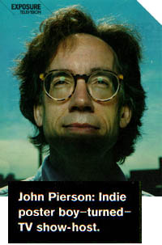

|


|
|


"Excuse me," says John Pierson, taking a call in the Long Island, New York, production offices of his
television show, Split Screen. "We've got to get a one-shot of my foot crushing a little model of our
RV for this Godzilla thing we're doing." As the host of the Independent Film Channel's Split Screen,
a half hour of street reports and indie-film gab, the 45-year-old Pierson works a scene he's long been
intimate with. Pierson produced such films as She's Gotta Have It, Roger and Me,
and Clerks, then chronicled the deal-making and backbiting of the Sundance set in his 1996
book, Spike, Mike, Slackers & Dykes. Split Screen was borne out of his book tour.
"We made a videotape [for booksellers] that was like an electronic press kit for a movie.
Spike [Lee] was in it, and Kevin Smith was in it. We thought maybe we could spin this off into a TV show."
Now in its third season, the program has moved beyond interviews with indie auteurs toward vérité
segments filmed with the help of Pierson's friends. One recent episode found Pierson and P.H.
O'Brien (a Split Screen regular) in O'Brien's Massachusetts hometown, where locals
were divided over whether an abandoned mental institution should be turned into a women's
prison or a water-slide park. A local senator, however, wanted a film studio. "The Crucible
had been shot there the year before," Pierson recalls. "He was saying things like, 'When
The Crucible filmed here, they bought $10,000 worth of duct tape. It fueled the economy.'
It turned into this Errol Morris-type of show."
Traversing the country in the aforementioned RV, Pierson is currently more intent on
channeling Charles Kurault than wrangling with studio execs, although he did help forge
"sweet deals" for two upcoming indies, The Blair Witch Project and American Movie.
"But I wasn't the guy selling those movies," he says. "I'm in a new life now."
VICTORIA DeSILVERIO
Back to Split Screen Press...
|
|
|
|